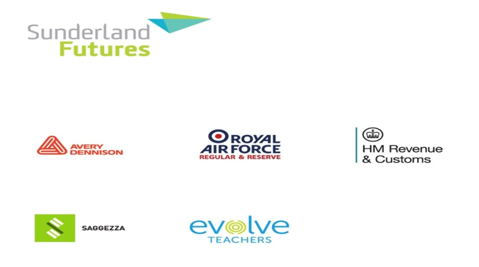

Melanie
Careers Blog
My Journey So Far
My name is Melanie, and I am a third-year mature psychology with counselling student who is passionate about helping others. I first started my journey when I completed a level 3 diploma in health and social care at Bishop Auckland college in 2015-2017. Working throughout the two years I got to experience working with children and adults with mental health problems which directed me into applying to study psychology with counselling at Sunderland university. My interests are working with both children and adults who have mental health problems and aiding towards their recovery and management. My long-term aim is to be a well-being practitioner as I find helping and making a difference to someone’s mental health very inspiring and rewarding. During my first year through to third year at Sunderland university, I volunteered for a company called Pioneering Care Service (PCP). The service is commissioned by Durham County Council and delivered by County Durham and Darlington NHS Foundation Trust and PCP who have years of knowledge and experience of working and supporting local people across County Durham. Well-being practitioners works with people either on a one-to-one basis or doing group sessions covering many mental health aspects such as healthy eating, smoking, alcohol awareness, cancer awareness and certain mental health needs such as anxiety and depression. My aim was to gain valuable practical experience alongside academic experience, enabling me to further my career and apply for a postgraduate position at Newcastle University doing Low Intensity Psychological Therapies. I do feel that with a combination of practical experience alongside academia and the support and assistance of careers events/advisors from the university had helped me be successful so far with my journey of becoming a well-being Practioner.
Melanie Brain
Email address: bh20ab@student.sunderland.ac.uk
Virtual graduate recruitment and placement fair on 5/11/20
What is a recruitment fair and why is it beneficial?
The virtual graduate recruitment and placement fair is the Universities largest yearly fair with over 50 top recruiters offering graduate jobs, training schemes, placement, and further study opportunities. The fair is organised by Sunderland futures, which is the university’s comprehensive employability offer, opportunities will include:
• Graduate, internship, and placement opportunities with local and national organisations.
• Post graduate study and research opportunities.
• Voluntary work which can include over seas or UK based work.
• With 60% of opportunities open to all students studying any subject, so it is highly recommended that you book a place on one of the fairs.


4 primary benefits attending a careers fair:
• Networking with potential employers.
The careers fair being the perfect place to network with people in your desired industry. Careers fairs gives you the chance to speak with multiple companies’ representatives all in the same place.
• Get your CV updated.
When applying for jobs, your CV is your calling card. A poorly written CV can be the reason why you never get an interview. A CV with spelling errors can give a poor first impression.
• Interview practice
Most people are not going to find jobs by attending one fair. But each time they attend, they get a chance to practice their interviewing skills. For example, approaching a potential employer can be intimidating for the first time. However, many find that after doing a few, that discomfort will start to fade.
• Learn about job opportunities throughout your industry.
A careers fair can also introduce students to alternative careers paths. For example, a well-being Practioner may be introduced to a trainee educational psychologist. These could be career paths that where unknown and not thought off previously giving possible change for career.
Feedback on the graduate fair
*Melanie (Psychology with Counselling student)
Engagement with the graduate virtual events fair for 2020 I found was very helpful. The careers fair helped me to find companies that matched my career aspirations and helped me to eliminate those that did not. Although I found that my specific career choice was not matched to a certain organisation. I did chat with Sunderland futures who helped me find alternative ways in which I could target possible companies. This was done through attending a 45-minute meeting online with a careers advisor who give me advice and guidance on how to engage on linked in. The careers advisor also told me about previous students that had got employment in my chosen role and suggested companies and websites such as NHS that advertise for trainee well-being practitioners.
Follow the link below for further details:
https://www.sunderland.ac.uk/futures/


Graduate fair on 21/11/20 with The British Psychology Society
The British Psychological Society’s Careers Event
Why attend a careers fair with BPS society??
• Explore further career options, hear from a number of different speakers, and learn more about what you can take away from having a psychology degree.
Enjoy being comfortable from your own home whilst listening to a diverse group of speakers who will share their stories on successful career moves with options for different paths to go down – some less conventional than you think!
• A chance to speak with successful BPS members afterwards with the option of talking on a discussion board with panel members.
Feedback from the BPS careers fair in psychology.
*Melanie Brain (Psychology with Counselling student).
Gemima’s success
Speakers discussed a number of different paths that students can forge through a career in psychology. I found the event very inspiring especially listening to Gemima who was a clinical psychologist. Gemima’s doctoral research was around the processes involved in developing resilience, and in 2015 she gave a TED talk on this subject. Gemima has now founded her own company and works freelance in a diverse range of settings; from private practice, to working with homelessness, hospices, the NHS, and carers of people with dementia. She is also principal psychologist in a men’s prison. She regularly runs training courses on building resilience for professionals and people from all walks of life. Within the homelessness sector, Gemima regularly facilitates reflective practice sessions for different staff groups as well as training on resilience building, change management and mental health awareness. Listening to Gemima actually hit home with myself as been a mature student who started their journey as a single parent, she gives me hope that no matter what situation you are in, persistence will get you through anything. She had very little hopes on her career progression and had a lot of negative feedback from others who would put her down. Gemima pushed through and actually ended up becoming a clinical psychologist, proving many people wrong.
Gemima advice on going forward.
No matter what, just keep going forward because if you want something that much you will get it. Do not be afraid to try because you feel something is beyond you!
Sabrina’s success.
Another member of the panel, Sabrina who has been a firefighter since she was 18 years old. She is now one of the most senior female firefighters in the UK. After leaving home at 15 and school at 16, she joined the fire service in Wales. While climbing the ranks, she studied at the Open University and then at Cardiff University, eventually completing a PhD in psychology. Her subsequent research into incident command in the emergency services has not only won awards but has also influenced policy at a global level. Sabrina was recently conferred as an Honorary Fellow at Cardiff University. Her first book The Heat of the Moment was published in 2019.
Sabrina’s thoughts on going forward.
Think about that goal and what it is you want and drive towards it. Use spare time more productively, just take a little look on your phone and screen time activity. Your answer may lie right there, Use your time wisely!
My experience in attending this careers event has been very helpful in giving me hope and persistence towards carrying on my career within the field of becoming a well-being practitioner. It has also helped me into knowing that keeping other options open in other areas of interest is not a bad thing. Having a backup plan with alternative plans in order is a vital in my own personal learning progression.
Lifelong learning is the process driven by self-motivation to pursue knowledge for professional or personal reasons. I intend to take what I have learnt today and encourage other students to follow the same process and take advantage of any career events/advisor opportunities that is available and never think that you cannot do it. Everyone learns at different levels under different circumstances so follow your dream!
Follow the link for further details:
https://www.bps.org.uk/events/careers-psychology